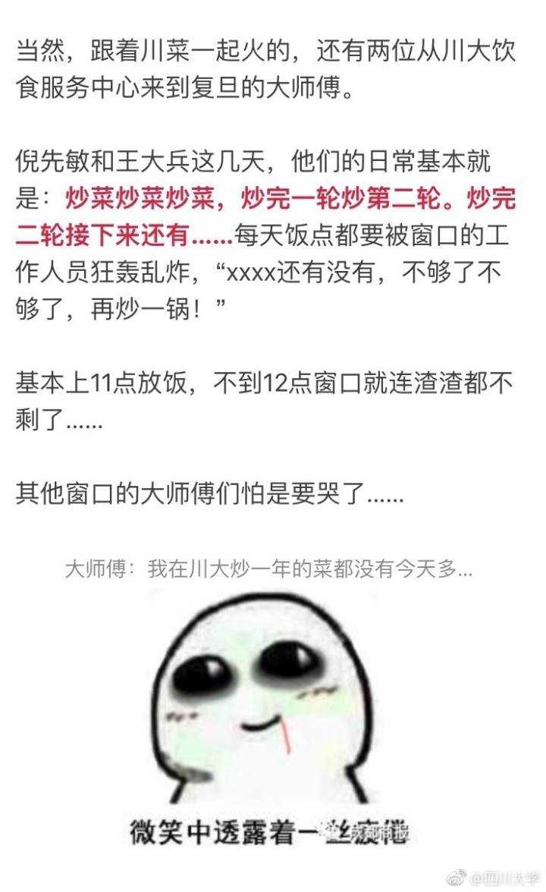
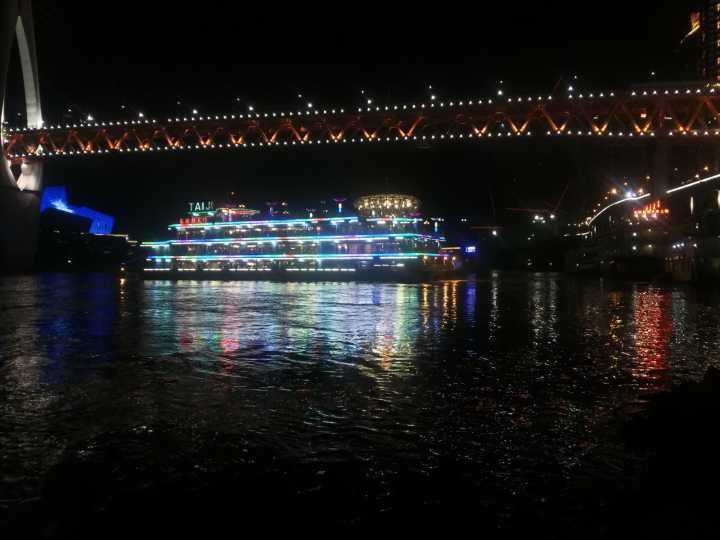
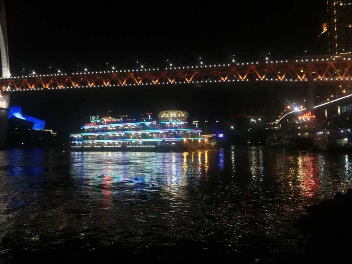

川大派了两个食堂大厨去复旦交流……没想到火上天了！6月5日，复旦大学的学生发现食堂里面悄咪咪多了一个川菜窗口，川大的师傅一口气提供了12道菜！于是川菜窗口排起了长龙，但复旦的孩子表示就算排到天黑，他们也要吃上美味的川菜。瞬间好骄傲、好自豪、好庆幸自己生长在四川哦！

| 爱重庆 | |
|  |  |
| 假如人生不曾相遇，我还是我，你还是你。行走在孤独而陌生的城市里，每天看日出日落，听虫鸣鸟叫，与自己的影子彼此安慰，冷暖自知。遇到便是缘分，碰到就会有福分。我们这一生总会遇到各种各样的人，不论遇上谁，碰上谁，遇到了就要以诚相待，用心关怀，彼此温暖，彼此珍惜。 |

老灵魂升起孤独
弥漫夜空
寓言长出双弧线
交相辉映
它陌生的头颅
装满幻想
像 期盼果实
必成熟于秋季般 不可思议
有些旅程 注定是寂寞的
没有山
没有水
没有影子
甚至 没有自己
犹如意义本身
——《使命》

| 那个人，是清浅岁月里最沉重的那一滴雨，在记忆的天空，季季滴落，季季来去。我流连在三月的雨季，看见永恒的天空已然由暗灰变作了烟青，看见蛮荒的塬上渐渐滋生出生命嫩绿的芽子，写意成一帘梵净山里早春的风景。一树茶花，朦胧烟雨，借着三月乍暖还寒的春光，我分明看见，晶莹的泪珠两行，悄然跌落，是滑落过岁月绸帕上的清冽水迹。 |
| 隔一程山水，你是我回不去的痛。岁月如一块橡皮，擦拭着我们过去的年少和轻狂。时间过得且快且慢，慢慢地，发现当初的那些日子，那些人，那些事，都离得那么遥远。 种在屋顶上的阳光，穿过树的间隙，剪成岁月的伤。我不了解“惜青春去，几点催花雨”的落寞，只知道世间多少的悲欢聚散，被感动得多了，也会变得麻木。渐渐地，都习惯了冷眼去看世间情。原来岁月像一把无情的刻刀，那些年华的背影，早已渐行渐远…… |
用心来记录生活